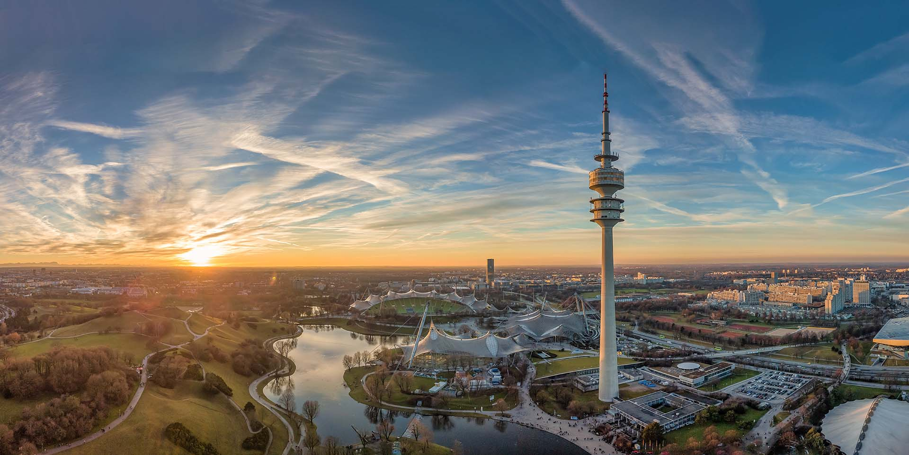

FAZLE MAWLA MUHAMMAD
Munich is the capital and most populous city of the Free State of Bavaria. With a population of 1,589,706 inhabitants as of 29 February 2024, it is the third-largest city in Germany, after Berlin and Hamburg. this Bavaria’s capital, is home to centuries-old buildings and numerous museums.
Straddling the banks of the river Isar north of the Alps, Munich is the seat of the Bavarian administrative region of Upper Bavaria, while being the most densely populated municipality in Germany with 4,500 people per km2. Munich is the second-largest city in the Bavarian dialect area, after the Austrian capital of Vienna.
Today, Munich is a global centre of science, technology, finance, innovation, business, and tourism. Munich enjoys a very high standard and quality of living, reaching first in Germany and third worldwide according to the 2018 Mercer survey, and being rated the world's most liveable city by the Monocle's Quality of Life Survey 2018. Munich is consistently ranked as one of the most expensive cities in Germany in terms of real estate prices and rental costs